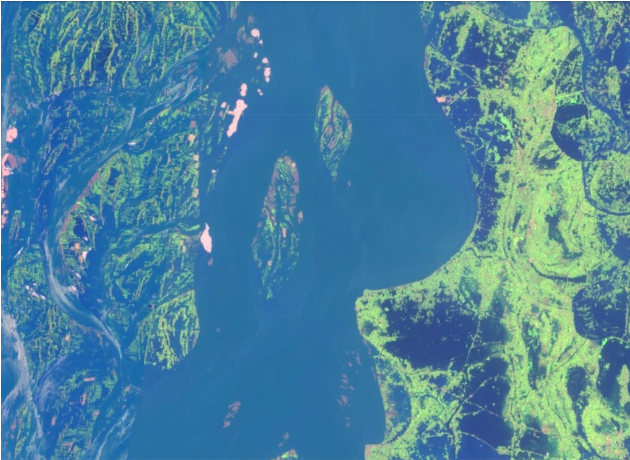

Projects & Media
Illicit activity and land change: Narcotrafficking in Central America
To preserve tropical forests, empower local communities: Phys.org
;
Los guardianes de la selva maya desafían a narcos e inversores: ElPais
;
Beyond 'business-as-usual': using news media and satellites to connect drug trafficking to forest loss: Behind the paper, Nature Sustainability
;
Paths to Sustaining Forests and Communities in Guatemala's Maya Reserve: Sustain What? podcast with Andy Revkin
The impact of cocaine trafficking on tropical forests in Central America Reddit Science AMA (Ask Me Anything)
 Illicit economic activity shapes land use around the world, but inadequate data makes it difficult to quantify relationships. We've developed methods to leverage news media and satellite data to study how illicit activity shapes landscapes in Central America, the region where the vast majority of cocaine that arrives in the USA travels through. As the US war on drugs attempts to
(unsuccessfully) intercept drug traffickers, they move into remote forested regions. This arrival of drugs, and the capital that comes with it, causes changes in land cover, use, ownership, and control with adverse
impacts on people, forests, and biodiveristy in Central America. In collaboration with a larger research team, we seek to better understand how narcotrafficking transforms landscapes and what policies could reduce violence and support sustainable development in the region.
See opportunities for our recent NASA grant to continue this work.
Illicit economic activity shapes land use around the world, but inadequate data makes it difficult to quantify relationships. We've developed methods to leverage news media and satellite data to study how illicit activity shapes landscapes in Central America, the region where the vast majority of cocaine that arrives in the USA travels through. As the US war on drugs attempts to
(unsuccessfully) intercept drug traffickers, they move into remote forested regions. This arrival of drugs, and the capital that comes with it, causes changes in land cover, use, ownership, and control with adverse
impacts on people, forests, and biodiveristy in Central America. In collaboration with a larger research team, we seek to better understand how narcotrafficking transforms landscapes and what policies could reduce violence and support sustainable development in the region.
See opportunities for our recent NASA grant to continue this work.
Informal urbanization: Mexico City
 Urban expansion is growing fasting in the Global South, much of which occured on land unplanned for formal urban development.
Informal urban settlements provides needed housing for growing populations, with subsequent needs for services like water, electricity, and property titles.
We've been studying what (and who!) governs informal urban expansion in Mexico City, and the social and environmental consequences.
Urban expansion is growing fasting in the Global South, much of which occured on land unplanned for formal urban development.
Informal urban settlements provides needed housing for growing populations, with subsequent needs for services like water, electricity, and property titles.
We've been studying what (and who!) governs informal urban expansion in Mexico City, and the social and environmental consequences.
Infrastructure, water vulnerability, and adaptation: Rainwater Harvesting in Mexico City
 As megacities grow, infrastructure choices may either reduce or further entrench vulnerability to water security. One decentralized adaptation to water stress is household rainwater harvesting, which can improve water access in the rainy season.
We worked with Isla Urbana, an NGO in Mexico City, to estimate how their harvesting system could improve water security across the city if implemented on every home. Oxfam funded a study for us to build a large geospatial model
to integrate satellite imagery, census data, cliamte data, and surveys to identify the neighborhoods where rainwater harvesting systems would reduce water stress and how many systems should be installed. The study was
the basis for the city government's plan to stall 100,000 systems where we indicate they could most improve water access. Media:
Viven 38 mil en precariedad hídrica alta en CDMX: La Reforma
Presentación de la investigación: Captación de lluvia en la CDMX: with Isla Urbana and Oxfam
As megacities grow, infrastructure choices may either reduce or further entrench vulnerability to water security. One decentralized adaptation to water stress is household rainwater harvesting, which can improve water access in the rainy season.
We worked with Isla Urbana, an NGO in Mexico City, to estimate how their harvesting system could improve water security across the city if implemented on every home. Oxfam funded a study for us to build a large geospatial model
to integrate satellite imagery, census data, cliamte data, and surveys to identify the neighborhoods where rainwater harvesting systems would reduce water stress and how many systems should be installed. The study was
the basis for the city government's plan to stall 100,000 systems where we indicate they could most improve water access. Media:
Viven 38 mil en precariedad hídrica alta en CDMX: La Reforma
Presentación de la investigación: Captación de lluvia en la CDMX: with Isla Urbana and Oxfam
Flood mapping with Cloud to Street
 I am the Chief Science Officer and Co-founder of Cloud to Street, a public benefit corporation which leverages remote sensing and artificial intelligence to build flood mapping and monitoring systems for low and middle income countries. I oversee the science team to map flood exposure, risk, and social vulnerability. My passion for reducing flood vulnerability comes from working in flood relief and resilience efforts in El Salvador from 2009-2012.
Media: Lightening talk about flood mapping in Republic of Congo at Geoforgood2020;
Social Entrepreneurs Predict Flooding Risk In Vulnerable Communities: Forbes;
Cloud to Street on the Innovation Happens Podcast
I am the Chief Science Officer and Co-founder of Cloud to Street, a public benefit corporation which leverages remote sensing and artificial intelligence to build flood mapping and monitoring systems for low and middle income countries. I oversee the science team to map flood exposure, risk, and social vulnerability. My passion for reducing flood vulnerability comes from working in flood relief and resilience efforts in El Salvador from 2009-2012.
Media: Lightening talk about flood mapping in Republic of Congo at Geoforgood2020;
Social Entrepreneurs Predict Flooding Risk In Vulnerable Communities: Forbes;
Cloud to Street on the Innovation Happens Podcast
Flood Insurance: Bangladesh
 With Columbia's International Research Institute for Climate and Society, we are developing methods and datasets to support innovative insurance programs in Bangaldesh, one of the most flood vulnerable countries in the world. Our datasets are based on multiple satellite sensors (MODIS, Sentinel-1, and SSMI). We use Natural Language Processing (NLP) models to extract flood damage data from news media articles to validate our satellite based inundated area time series.